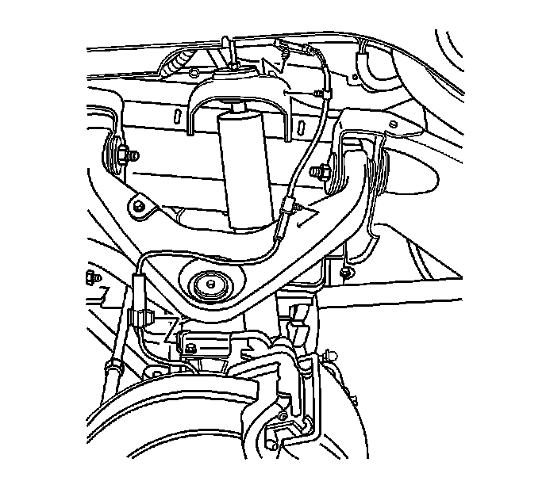
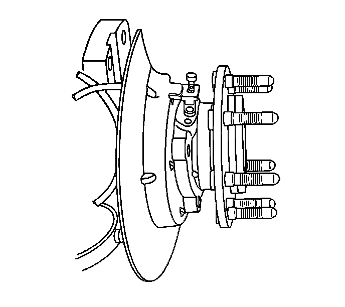

Front Wheel Speed Sensor Replacement
Front Wheel Speed Sensor Replacement
Caution: Refer to Brake Dust Caution.
Removal Procedure
1. Raise and support the vehicle. Refer to Lifting and Jacking the Vehicle.
2. Remove the tire and wheel assembly.
3. Remove the front disc brake rotor.

4. Remove the wheel speed sensor (WSS) cable mounting clip from the steering knuckle.
5. Remove the WSS cable mounting clip from the upper control arm.
6. Remove the WSS cable mounting clip from the frame attachment point.
7. Disconnect the WSS cable electrical connector.

8. Remove the WSS mounting bolt.
NOTICE: Carefully remove the sensor by pulling it straight out of the bore. DO NOT use a screwdriver, or other device to pry the sensor out of the bore. Prying will cause the sensor body to break off in the bore.
9. Remove the WSS from the hub/bearing assembly.
Installation Procedure
1. Plug the WSS bore to prevent debris from falling into the hub.
2. Using a wire brush or equivalent, clean the WSS mounting surface on the hub to remove any rust or corrosion.
Important: Use the lubricant supplied in the WSS kit. Do not substitute another type of grease.
3. Apply a thin layer of lubricant to the hub surface and the WSS O-ring prior to installation.
4. Install the WSS into the hub/bearing assembly. Ensure that the WSS is seated fully against the hub.
Notice: Refer to Fastener Notice.
5. Install the WSS mounting bolt.
Tighten the WSS mounting bolt to 18 N.m (13 lb ft).
Important: Make sure the WSS cable is properly routed, the wire is not twisted and all clips are secure. Do not allow the wire to contact surrounding vehicle components.
6. Install the WSS cable mounting clip to the knuckle.
7. Install the WSS cable mounting clip to the upper control arm.
8. Install the WSS cable mounting clip to the frame attachment point.
9. Connect the WSS cable electrical connector.
10. Install the front disc brake rotor.
11. Install the tire and wheel assembly.
12. Perform the diagnostic system check. Refer to Diagnostic System Check - Vehicle.